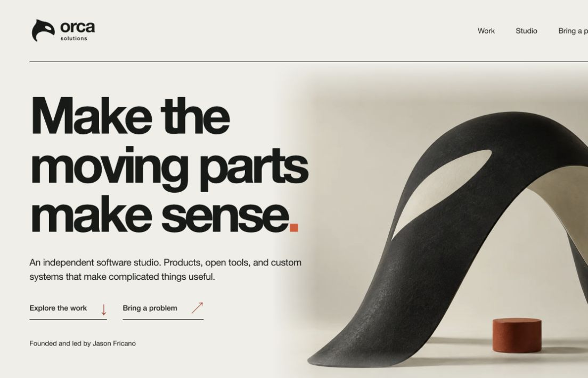
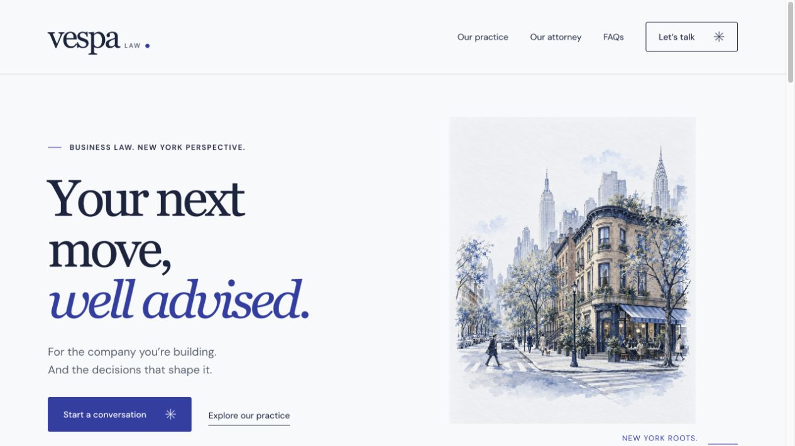
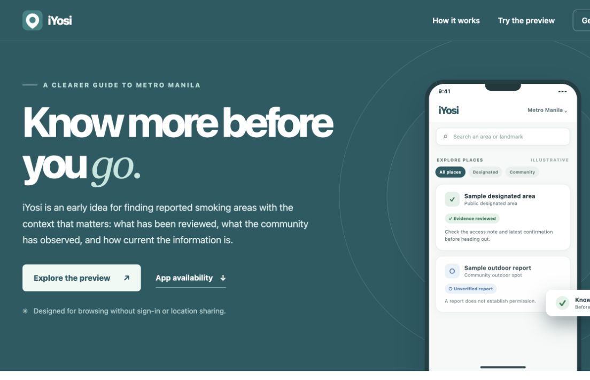
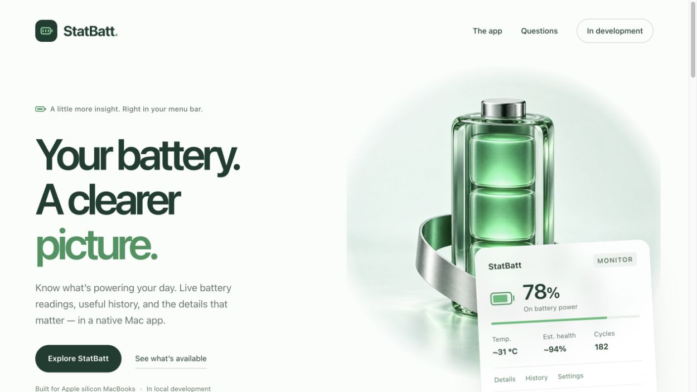

Spessartine
A Python diagnostic for understanding why a function behaves differently when moved from serial execution into worker processes or interpreters.
The current work is an experimental diagnostic spike, with no public release.
More work
Software, website studies, and questions still taking shape. Each has its own place and its own stage.
Early work, with no public demo yet. These entries describe the direction rather than a released feature set.
A Python diagnostic for understanding why a function behaves differently when moved from serial execution into worker processes or interpreters.
The current work is an experimental diagnostic spike, with no public release.
An AI-assisted application for building your own antilibrary—a collection shaped by what you want to explore and understand.
My personal antilibrary is the collection I browse here. Builder is a separate application intended to help other people make their own.
A household application being developed to bring everyday obligations, plans, and reference information together.
The design puts dates, permissions, and actions under explicit application control, with AI behind a separate adapter. The application structure is underway; several components are still unwired.
A personal investment strategy app being developed to organize research, backtests, and portfolio review.
The planned workflow separates research from execution, with paper testing, explicit risk limits, and records of the decisions along the way.
Identity, language, and implementation. For commissioned work, visit Orca Solutions ↗.

The identity and website for my independent software studio. A different kind of home for the work, with a voice of its own.

A fictional professional-services website concept. An exercise in clear language, navigation, and a practical next step for someone seeking counsel.
Projects I stopped before they became finalized products. These records preserve the work and decisions.

An abandoned mobile-guide project for designated smoking areas. It never became a finalized product; the retained landing design is illustrative.
Read the project record ↗
An abandoned macOS battery-app project. It never became a finalized product; the record preserves its design and engineering decisions.